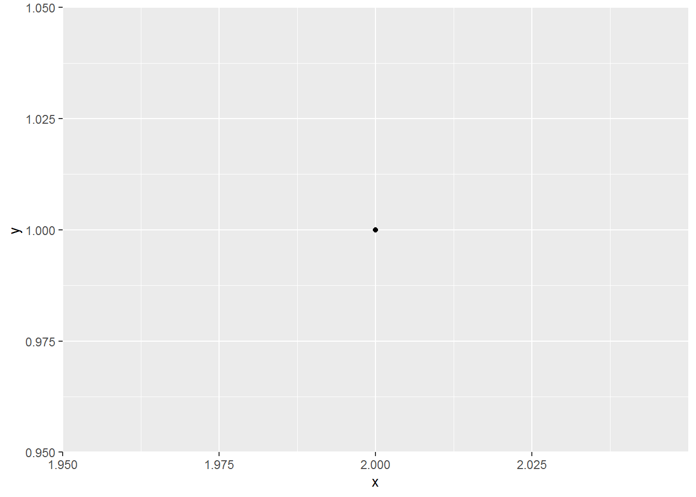
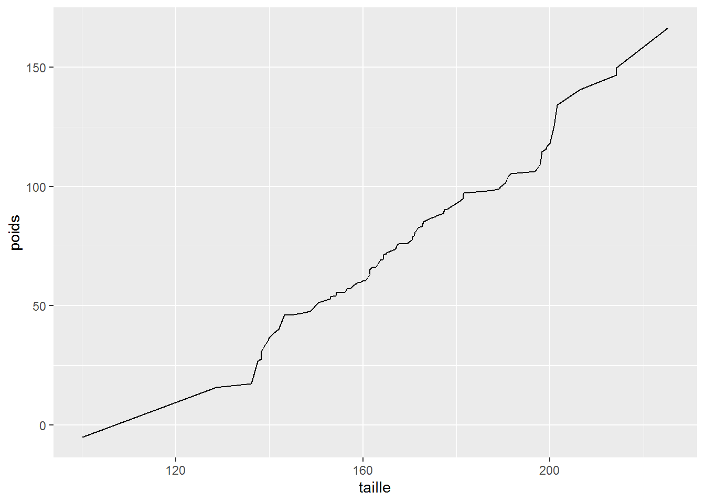
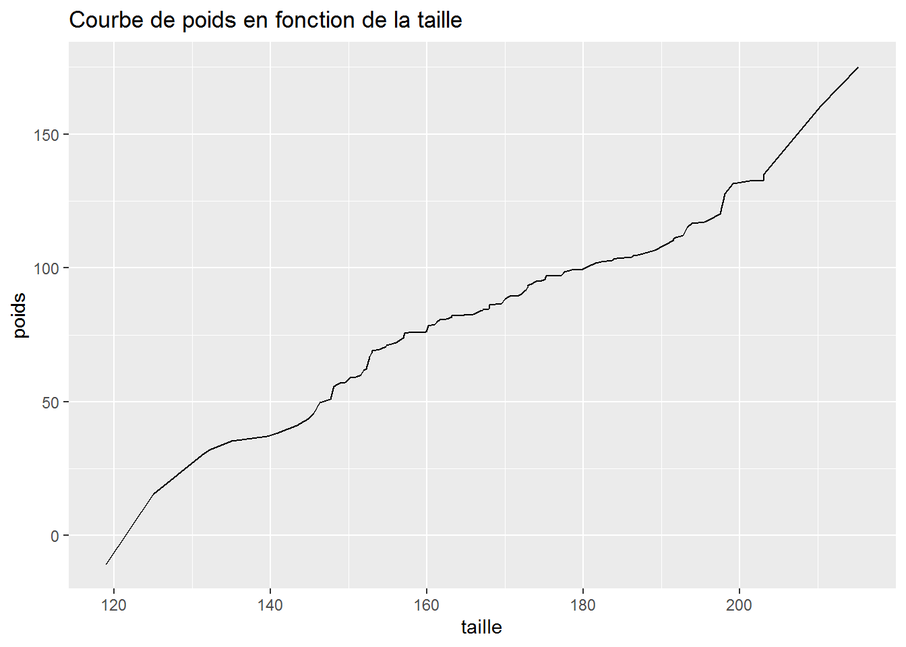
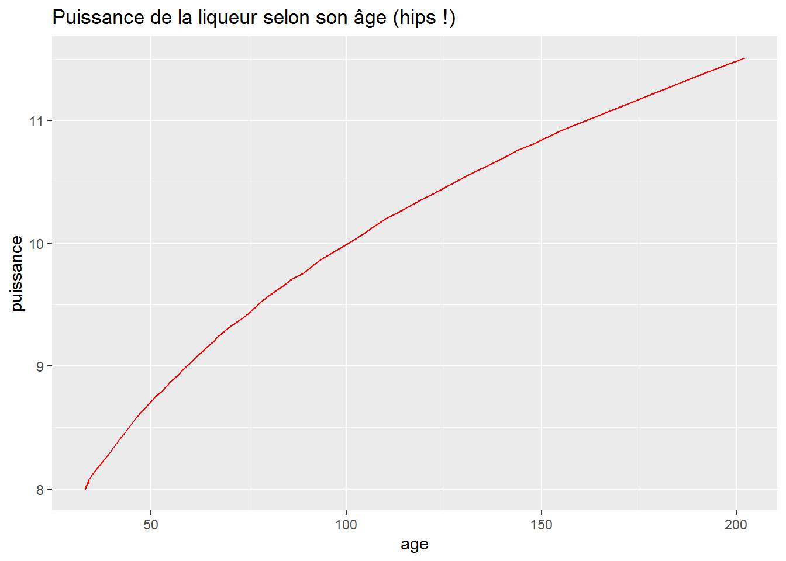

Chapitre 5 - De l’ambroisie et des graphiques
Veuillez confirmer votre identité
Afin de s’assurer de votre identité le cuisto Batreb vous lance un défi: déterminer à quel mois il vaut mieux récolter l’ambroisie. Pour ce faire, vous allez vous appuyer sur un package de R très pratique pour la réalisation de graphiques : le package ggformula
ggformula est un package permettant de réaliser différents types de graphique de manière simplifiée.
“gg” pour grammaire des graphiques et “formula” pour les formules.
Des formules magiques pour faire des graphiques
Les recettes de grammaire de graphiques
Chaque graphique est associé a un sortilège, chaque sortilège à des indégrédients, cet ensemble est appelé grammaire des graphiques.
Tous les sortilèges des graphiques commencent par le nom de code gf_.
Par exemples,
- pour faire un graphique de points, le sortilège est gf_point,
- pour faire une courbe il y a gf_line
- pour faire un histogramme ce sera gf_bar.
Il y a pleins d’autres sortillèges sur les graphiques que tu peux voir dans l’aide du package ggformula.
Les ingrédients
Pour réussir la recette de grammaire de graphique, il ne faut pas oublier d’ingrédient.
Le premier est essentiel, il sert à dire ce que l’on veut représenter.
Les autres ingrédients servent à agrémenter la recette (changer la couleur, faire varier la transparence ou ajouter un titre et plus encore). Nous verrons plus tard quelques exemples.
Revenons pour le moment à notre ingrédient essentiel, si je veux représenter un point d’ordonnée 1 et d’abscisse 2, il faut utiliser le sortilège gf_point et comme ingrédient principal les coordonnées du point que je veux représenter, prenons 1 et 2.
L’écriture est :

C’est un premier exemple. Mais ne vous inquiétez pas, nous allons savoir rapidement comment faire de beaux graphiques pas comme ceux de Sassos ;-)
L’opérateur ~
Mais à quoi sert le symbole ~ ?
L’opérateur ~ remplace la phrase en fonction de. Par convention, dans un graphique on trace l’ordonnée (y) en fonction de l’abscisse (x). Donc l’écriture 1 ~ 2 correspond à un point d’ordonnée 1 et d’abscisse 2.
Si mainenant je veux tracer la courbe du poids en fonction de la taille issus de la base des individus base_individus. J’écris la formule magique poids ~ taille et avec le bon sortilège, on a la recette complète :

Si je veux tracer un histogramme représentant le nombre de personnes selon le sexe:

Remarquez que la partie à gauche du ~ n’est pas renseignée dans ce cas. Cela se traduit par je veux représenter tous les individus de la table par sexe. Il s’agit alors de compter le nombre d’individus Femme et Homme.
Les ingrédients exhausteurs de gout
Sur l’exemple de la courbe de poids, pour ajouter un titre, j’utilise… l’ingrédient title:

Et pour changer la couleur, il faut ajouter l’ingrédient color:
base_individus %>%
gf_line(poids ~ taille, title = "Courbe de poids en fonction de la taille", color = "blue")
A vous de jouer
Le fichier ambroisie contient la liste des mois qui ont donné les meilleures récoltes d’ambroisie au cours des dernières années. A l’aide du graphique suivant, répondez désormais à l’énigme suivante: “A quel mois vaut il mieux cueillir l’ambroisie?”
Mais tout d’abord, quel serait le bon ordre des ingrédients pour tracer le diagramme des meilleurs mois ?
Une fois le bon ordre déterminé ci-dessus, il te reste à pratiquer directement dans la console R (avec la même formule).
# Créez le graphique
# Fin de l'exercice